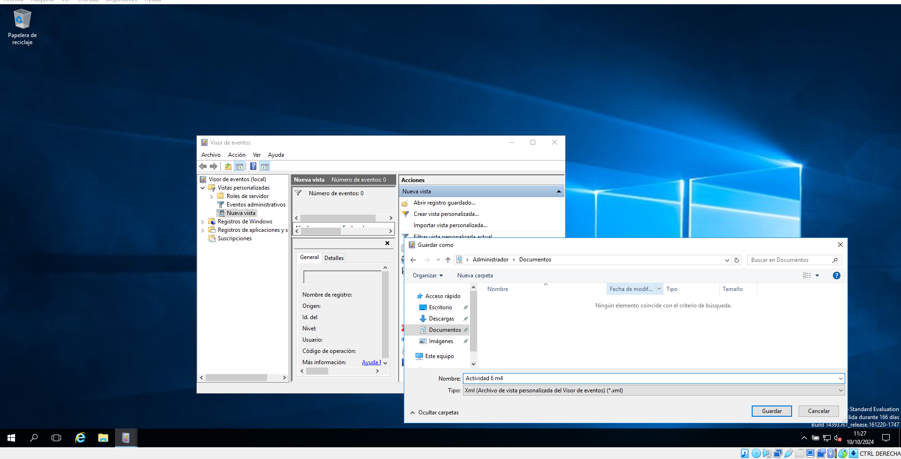

Guia per a la Gestió d'Esdeveniments a Windows
1. Crear una vista personalitzada
-
Pas 1: Obre el Visor d'esdeveniments

-
Pas 2: Fes clic en Visions personalitzades i crea una nova vista personalitzada

-
Pas 3: Defineix els criteris de filtratge i al aceptar, es desa la vista personalitzada

2. Crear una tasca
-
Pas 1: Obrir el Programador de tasques

-
Pas 2: Fer clic a "Crear tasca"

-
Pas 3: Configurar les opcions de la tasca, estableix els desencadenants i es desa la tasca

3. Exportar una vista personalitzada a un fitxer XML
-
Pas 1: Fer clic amb el botó dret i seleccionar "Exportar"

-
Pas 2: Confirma l'exportació i seleccionar la ubicació de desament on vulgis (en el nostre cas ho vam guardar en Descarges)

4. Importar la vista personalitzada des d'una altra màquina virtual (MV)
-
Pas 1: Fer clic a "Importar vista"

-
Pas 2: Seleccionar el fitxer XML a importar i confirmes la importació

5. Esdeveniments rellevants a Windows
- 1. Quin esdeveniment succeeix quan s'inicia Windows? Inici de Windows: Es registra un esdeveniment d'inici en el registre d'esdeveniments.
- 2. Quin esdeveniment succeeix quan s'apaga Windows? Apagat de Windows: Es registra un esdeveniment d'apagat en el registre d'esdeveniments.
- 3. Quin esdeveniment succeeix quan es crea un compte d'usuari? Creació d'un compte d'usuari: Es registra un esdeveniment de creació de compte en el registre d'esdeveniments.
- 4. Quin esdeveniment succeeix quan un usuari falla un login? Fallo d'inici de sessió: Es registra un esdeveniment de fallo
- 5. Quin esdeveniment succeeix quan un usuari canvia l'hora del SO? Canvi d'hora del sistema operatiu: Es registra un esdeveniment de canvi d'hora en el registre d'esdeveniments.